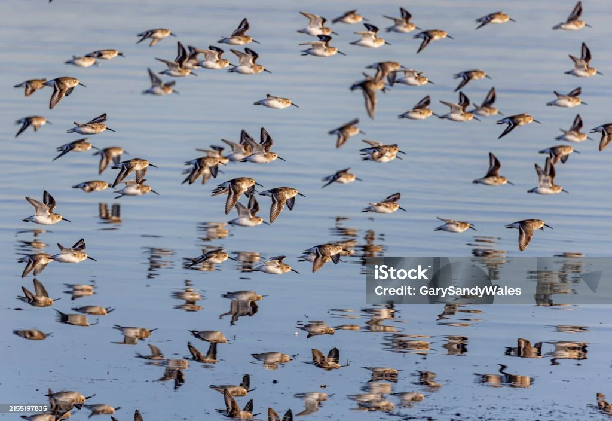

Data
- Area: 587,041 sq km
- Population: 27,691,018
- Capital: Antananarivo
- Languages: Malagasy, French
- Currency: Malagasy Ariary
- Time Zone: UTC+3
- Calling Code: +261
- Internet TLD: .mg
Weather
Temperature: 10 °C
Conditions: Partly Cloudy
Wind Speed: 5 km/h
Wind Chill: Calculating...
Animal and Culture

Birds soring above the rice terraces create a builtiful and serene atmosphere.